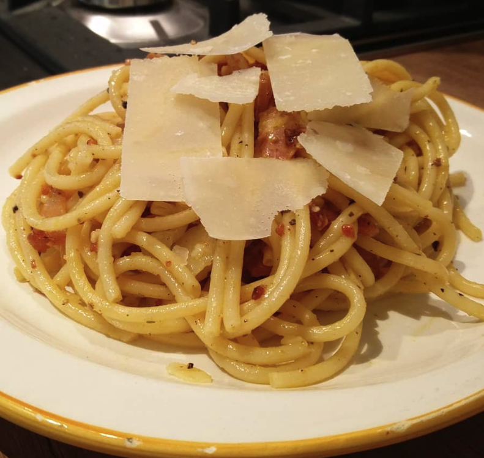

Current Date and Time:

Octopus Stew
Ingredients:
- Octopus: 1
- Your Favourite Pasta
- Tomato Passatta
- Olives as much as you like
- Walnuts as much as you like
- Cheese as much as you like
- Tomato Paste: 1 Spoon
- Red Wine: 500ml
- Onions: 2
- Garlic: 1
- Apple: 1
Method of Cooking:
- Step 1: Clean your Octopus and Boil for 1 hour and let rest in its own water until it goes cold
- Step 2: Chop your Onions, Garlic, Apple, Olives and Walnuts and Fry, Start with high heat then reduce to low heat
- Step 3: Add the Tomato Paste and stir, add the 500ml of Red wine and let it reduce
- Step 4: Add the Tomato Passatta stir until it boils, after gradually add Octopus Water
- Step 5: After an hour add the Octopus to the sauce for around 30mins and let sit on low heat
- Step 6: Cook your Pasta and when ready mix with the Octopus Stew, Grate as much cheese as possible and Enjoy!

Carbonara
Ingredients:
- Guanciale
- Your Favourite Pasta
- 4 Eggs
- Pecorino Romano
- Black Pepper
- Olive Oil
Method of Cooking:
- Step 1: Chop your Guanciale in small dices
- Step 2: Toast Black Pepper on a low heat and move to a Pestel and Mortar and crush
- Step 3: Fry the Guanciale in the same pan, start with a height heat and reduced an let it cook until it gets Crispy
- Step 4: In a bowl, break 2 whole egg, and 2 egg yolks, Grate Pecorino Romano and add a drizzle of Olive oil and stir, you can add some water too make it a little runny.
- Step 5: Cook you pasta, hold onto some of the pasta water, throw the cooked pasta with the Guanciale toss a few times and add the Black pepper and toss again.
- Step 6: Remove the pan from the flame let sit until it's not piping hot and add the egg mixture and stir, don't let the egg get curdled, add more Pecorino Romano and Enjoy!